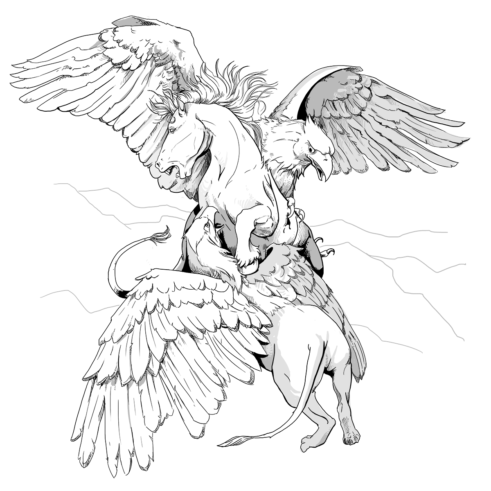

Complete Monster
by
Radaghast Kary
← Grick Alpha
↑Index↑
Grig →

Illustration by Mariana Ruiz Villarreal,
Public Domain
Griffon
Members:
Rimefire Griffon
5e
Unaligned
D&D 5 facts
Size: Large
Type:
Monstrosity
CR: 2
D&D 5 sources
Monster Manual
, p. 174
Monsters & Creatures
, p. 82
D&D 5 links
Griffon in 5e d20 SRD
Griffon on AideD&D
4e
D&D 4 facts
Level: 7
Type: Brute
XP: 300
Entry: Griffon
D&D 4 sources
Monster Manual
, p. 147
D&D 4 links
Griffon on D&D Insider
3e
TN
D&D 3.0 facts
Abilities: Str 18, Dex 15, Con 16, Int 5, Wis 13, Cha 8
AC: 17 (-1 size, +2 Dex, +6 natural)
Advancement: 8-10 HD (Large); 11-21 HD (Huge)
Attacks: Bite +8 melee, 2 claws +3 melee
CR: 4
Damage: Bite 2d6+4, claw 1d4+2
HD: 7d10+21 (59)
Initiative: +2 (Dex)
Organization: Solitary, pair, or pride (6-10)
Qualities: Scent
Reach: 5 ft. by 10 ft./5 ft.
Saves: Fort +8, Ref +7, Will +3
Size: Large
Skills: Griffons receive a +4 racial bonus to Jump checks. *They also receive a +4 racial bonus to Spot checks in daylight.
Speed: 30 ft., fly 80 ft. (average)
Terrain: Temperate and warm hill and mountains
Treasure: None
Type:
Beast
D&D 3.0 links
Griffon in 3.0 d20 SRD
D&D 3.5 facts
Type: Magical Beast
Size: Large
CR: 4
D&D 3.5 sources
Monster Manual
, p. 139
D&D 3.5 links
Griffon in 3.5e d20 SRD
Pathfinder 2 facts
Level: 4
Pathfinder 2 sources
Bestiary
Pathfinder 2 links
Griffon Monster in Pathfinder 2 SRD
1e
First BD&D
sources
Basic Set (Holmes)
, p. 28
TN
BLUEHOLME facts
BLUEHOLME sources
BLUEHOLME Journeymanne Rules
BLUEHOLME Prentice Rules
, p. 36
BLUEHOLME links
Griffon Dreamscape Design
BLUEHACK sources
BLUEHACK
, p. 20
0e
OD&D facts
Number Appearing: 2-16
AC: 3
Move: 12/30
HD: 7
Chance in Lair: 10%
Treasure: Type E
OD&D sources
Monsters & Treasure
, p. 4
N
S&W
facts
AC: [16]
Attacks: 2 claws (1d4) plus 1 bite (2d8)
HD: 7
HDE: : 8
Move: 4 (9 when flying)
Special: Flight
XP: 800
S&W
sources
The Blue Book of Dangers and Dweomers
, p. 88
{kind=link}